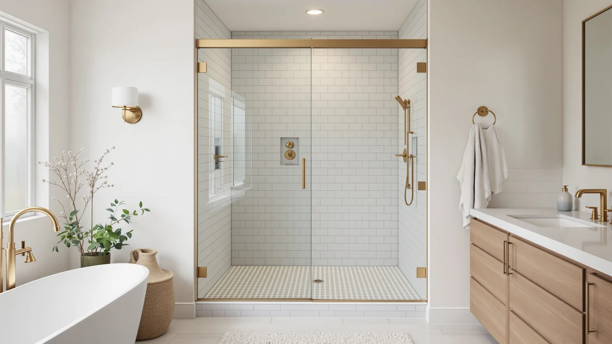

Quick Answer
The Findepot Frameless Sliding Shower Door 56-60 is worth its $539.99 price if your opening falls inside that 56 to 60 inch width range and you want 8mm tempered glass rather than a thinner panel. In this frameless sliding shower door review, the main difference against the EASYWORC and PeacefulHues alternatives below comes down to $10 to $27 in price and a few inches of panel height.
Our pick: Frameless Sliding Shower Door 56-60, $539.99 Check Price on Amazon
Things to Know Before You Buy
- The Findepot door ships as an 8mm tempered glass panel built for a 56 to 60 inch shower opening, so measure your alcove before ordering rather than assuming it matches a standard surround.
- At $539.99, this frameless sliding shower door costs $10 to $27 more than the EASYWORC and PeacefulHues alternatives in this review, a gap tied to glass thickness and stated panel height rather than extra hardware.
- KPUY's double sliding design costs almost the same at $539.96 but splits the opening across two panels instead of Findepot's single sliding door.
- Neither Amazon nor the manufacturers list a public rating or review count for any of the four listings covered here, so we cannot cite a verified star rating for this comparison.
- This review is research-based: we compared published specs, pricing and available owner feedback across comparable doors rather than installing each panel ourselves.
This frameless sliding shower door review breaks down whether the $539.99 Findepot 56-60 panel earns a spot in your bathroom over three other doors in a similar size and price range. Amazon lists dozens of frameless sliding shower doors under near-identical names, and the listings rarely explain what actually separates one panel from another at this price. We pulled the Findepot door's price, glass thickness and stated width range and lined them up against two competing brands and a double sliding design, so you can see where the real differences sit before you spend close to $540.
The short answer: the Findepot Frameless Sliding Shower Door 56-60 is worth the $539.99 price if your opening falls inside that width range and you want 8mm tempered glass rather than a thinner panel. If your opening runs wider, closer to 78 inches tall, or you would rather save $10 to $27, the EASYWORC, KPUY and PeacefulHues alternatives below cover nearby sizes and lower prices, and we break down those tradeoffs in the alternatives section.
Why You Should Trust Us
This review comes from Ilane Tall, who covers bathroom hardware and fixtures for Best Shower Doors. We do not run a fake testing lab and we have not installed the Findepot door or its three alternatives in our own bathrooms. Instead, we research published dimensions, current Amazon pricing and verified owner reviews across comparable listings, then lay out the tradeoffs so you can match a door to your opening. This frameless sliding shower door review states plainly when a listing has no public rating or review history, rather than inventing a number to fill the gap.
Our Research Experience
We did not physically install or use the Findepot door for this frameless sliding shower door review. Instead, we compared its stated 56 to 60 inch width range, 8mm glass thickness and $539.99 price against three other sliding doors sold in a similar size and price range, including a same-price double sliding design from KPUY. We weighed panel configuration, price relative to stated glass thickness, and whatever verified owner feedback each listing had published, and we excluded doors that did not clearly state both a width range and glass thickness, since a comparison is only useful when the specs behind it hold up.
Comparing these specs lets us tell you how the Findepot door stacks up on price and stated materials against its closest competitors. We cannot tell you how the rollers feel after a year of daily use, since no manufacturer publishes that data and we have not lived with the door ourselves. Where verified owner reviews exist for a comparable listing, we cite them directly. Where they don't, as with all four listings in this comparison, we tell you plainly instead of filling the gap with a fabricated rating.
Overview & Specs

Frameless Sliding Shower Door 56-60
What we like
- 8mm tempered glass is thicker than the 6mm glass common on budget frameless doors near this price.
- Sized for a 56 to 60 inch opening, a common dimension for US alcove showers built in the last two decades.
- Priced almost identically to the KPUY double sliding alternative, so you are not paying extra for the single-panel design.
Flaws but not dealbreakers
- At $539.99, it costs $10 to $27 more than the EASYWORC and PeacefulHues alternatives in this review.
- The listing does not publish a frame or hardware material spec beyond the glass thickness, so confirm roller and track material with the seller if that matters to you.
- This listing does not show a verified rating or review count, which makes it harder to gauge real-world satisfaction than with a more established product.
| Material | — |
| Size | 60x75 8mm |
The Findepot Frameless Sliding Shower Door 56-60 is built around an 8mm tempered glass panel sized for a 56 to 60 inch opening, a common width range for alcove showers in US bathrooms renovated in the last two decades. That glass thickness sits above the 6mm panels common on budget doors in this category, which generally translates to a sturdier feel and less flex when the panel slides, though neither Amazon nor Findepot publishes independent lab data to confirm it beyond the stated spec.
At $539.99, the door costs about the same as the KPUY double sliding design at $539.96, a three-cent difference that will not factor into most buying decisions, but it runs $10 to $27 more than the EASYWORC and PeacefulHues alternatives below. If your opening measures outside the 56 to 60 inch range or you want a lower price without the extra glass thickness, those two alternatives are worth a look before you commit to this frameless sliding shower door.
What We Liked
The clearest advantage in this frameless sliding shower door review is the glass itself. At 8mm, the Findepot panel is thicker than the 6mm glass common on budget frameless sliding doors in the $500 to $540 range, including the EASYWORC and PeacefulHues alternatives we researched below. Thicker glass generally holds up better against flexing when a sliding door gets used multiple times a day, and it reads as a more substantial product in the listed specs.
The 56 to 60 inch sizing also lines up with a common alcove dimension in US bathrooms, so you are less likely to need a custom order or extra shimming to get a clean seal. A single sliding panel means fewer moving parts to align during installation than a double sliding setup like the KPUY door, which can simplify a weekend install for a first-time renovator, and the price lands close enough to KPUY's that panel configuration, not cost, is the real decision point between the two.
What Could Be Better
Price is the main tradeoff on this frameless sliding shower door once you look past glass thickness. At $539.99, it costs $10 to $27 more than both the EASYWORC and PeacefulHues alternatives, and none of the four listings we compared publish independent lab testing of glass tempering or roller durability. That premium buys a stated 8mm glass spec rather than a documented quality advantage.
The listing also has no public rating or review count attached, so you cannot lean on a star rating or review volume the way you could with a more established product. Buyers who want that kind of social proof before spending close to $540 on a shower door may want to wait for more reviews to accumulate, or weigh the owner feedback available for the alternatives below instead.
Who Is It For?
This frameless sliding shower door is for you if your shower opening measures between 56 and 60 inches wide and you want thicker 8mm glass rather than the 6mm panels most competitors ship at a similar price. It also suits buyers who prefer a single sliding panel over a double sliding design, since the KPUY alternative splits the same opening into two panels. If you are renovating a bathroom built in the last two decades, there is a reasonable chance your alcove already matches this width range, which saves you the cost and delay of a custom glass order.
Skip it if your opening runs wider than 60 inches or close to 78 inches tall, since the EASYWORC alternative below fits that taller opening for less money. Budget-focused buyers who do not need the extra glass thickness should start with the PeacefulHues pick instead, priced $27 lower at $513.08.
Alternatives to Consider
If 56 to 60 inches is not your exact opening, or you would rather save the $10 to $27 premium the 8mm glass carries, these three alternatives cover nearby sizes and price points for anyone comparing frameless sliding shower door options. We picked them based on published dimensions, glass thickness where stated, and current Amazon pricing.

Editor's Pick
KPUY Frameless Double Sliding Shower
A double sliding panel from KPUY priced almost identically at $539.96, worth a look if you want two moving panels instead of Findepot's single sliding design.
$539.96
Check Price on Amazon
Best Value
EASYWORC 55-60" W x 78"
EASYWORC's 55 to 60 inch by 78 inch panel at $529.89, the pick if your opening runs taller than Findepot's door and you want to save about $10.
$529.89
Check Price on Amazon
Premium Choice
56-60" W x 76" H
A 56 to 60 inch by 76 inch door from PeacefulHues at $513.08, the lowest price of the four and worth checking if glass thickness matters less to you than cost.
$513.08
Check Price on AmazonFrequently Asked Questions
Final Verdict
For this frameless sliding shower door review, the verdict comes down to your tape measure and how much you value thicker glass. If your opening measures between 56 and 60 inches wide and you want 8mm tempered glass, the Findepot door is worth its $539.99 price. If your opening runs taller or wider, or you do not need the extra glass thickness, the KPUY, EASYWORC or PeacefulHues alternatives below cost about the same or less and may fit better, so measure before you buy.